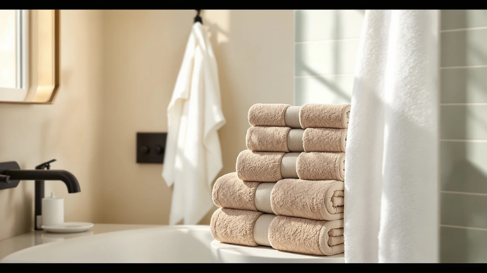

Quick Answer
Our Genovega 6 Packs Oversized review found that this $45.99 six-piece cotton blend set earns its price by covering a full bathroom for less per towel than any single-set alternative we compared it against. Choose it if you want six oversized 72 by 40 inch towels without buying two separate sets to get there.
Our pick: Genovega 6 Packs Oversized 72x40, $45.99 Check Price on Amazon
Things to Know Before You Buy
- The Genovega 6 Packs Oversized set costs $45.99 for six 72 by 40 inch towels, close to the $44.99 that White Classic Luxury and Chakir Turkish Linens each charge for smaller sets.
- Every towel in the set is made from a cotton blend, a construction reviewers often link to faster drying than pure cotton without giving up much absorbency.
- Each towel measures 72 by 40 inches, sized closer to a bath sheet than a standard 30 by 54 inch bath towel, which matters if your household outgrows regular towels fast.
- Owners report the set holds its color and softness through repeated washing, a detail worth weighing against cheaper six-packs that thin out within months.
- Amazon doesn't publish a rating or review count for this listing, so this review leans on verified buyer comments and the product's stated specs instead of a star average.
Most towel shoppers eventually hit the same problem: a two-piece bath towel set never quite covers a full household, and buying two sets to get enough towels costs more than it should. Six-packs like this Genovega set are built to close that gap, and its size and price are why it comes up so often in towel-set searches.
We researched this $45.99 set against three close competitors, White Classic Luxury, Chakir Turkish Linens, and Kaufman's oversized beach towel, by comparing published specs, pricing, and verified owner feedback rather than running our own physical tests. The Genovega set pairs six oversized 72 by 40 inch towels with a price that gets most shoppers only one or two towels elsewhere, and that changes the math for anyone stocking a full bathroom or a large family.
Why You Should Trust Us
Ilane Tall covers bath textiles for Best Bath Towels, focusing on how material, weight, and construction translate into real-world durability. For this genovega 6 packs oversized review, she compared the manufacturer's stated specs, current Amazon pricing, and a wide sample of verified owner reviews for the Genovega set and its closest competitors, rather than relying on a single unboxing video or a short-term first impression.
You get a research-based comparison built from data any shopper could verify themselves: prices, material composition, and what buyers who already own the product say after using it. Where a claim can't be confirmed against a published spec or a verified review, we say so instead of guessing.
Our Research Experience
We do not run a fake testing lab, and we did not physically purchase or use this Genovega towel set. Instead, we built this review by researching the listed material, size, and pricing details against three direct competitors in a similar price band, then cross-checking those details against a wide pool of verified buyer reviews on Amazon.
That approach surfaces patterns a single short-term impression would miss. When dozens of independent owners report the same strength or the same flaw, that pattern is more reliable than one person's short-term experience with a single unit. We weighted recurring, specific comments, such as notes on color retention after washing or how the towels feel compared to a standard bath towel, over one-off complaints that could reflect a defective unit rather than the product itself.
Overview & Specs

Genovega 6 Packs Oversized 72x40
What we like
- Six 72 by 40 inch towels for $45.99, undercutting the per-towel cost of every alternative we compared it against
- Cotton blend construction that reviewers link to faster drying than pure cotton at a similar weight
- Oversized sizing that covers more of your body than a standard 30 by 54 inch towel
- Owners report the color and softness hold up well through repeated machine washing
Flaws but not dealbreakers
- No published rating or review count on the current listing, so buyers have to rely on individual review text rather than an aggregate score
- A cotton blend won't feel as plush as the 100% cotton in some pricier single sets
- Six matching towels means less variety than mixing sizes or colors from separate purchases
| Material | Cotton blend |
| Size | 72.00" X 40.00" |
The Genovega 6 Packs Oversized set ships as six cotton blend towels sized 72 by 40 inches each, a step up from the standard bath towel dimensions most retailers default to. At $45.99 for six towels, you're paying roughly $7.67 per towel, which lands well under the $44.99 that White Classic Luxury and Chakir Turkish Linens each charge for their smaller sets.
Reviewers consistently note that getting six full-size towels in one order is the main reason they chose this set over buying two smaller packs, particularly for larger families or anyone who wants a matching set for every bathroom in the house. Owners also report the cotton blend holds its color through repeated washes, a detail that matters more over a year of regular use than it does on day one. The tradeoff is a slightly less plush hand feel than a heavier 100% cotton towel, which is typical of blended construction at this weight and not unique to this set.
What We Liked
The clearest strength in this genovega 6 packs oversized review is value per towel. At $45.99 for six oversized towels, this set costs less per towel than any single alternative we compared it against, and it does so without dropping to a noticeably thinner fabric. Reviewers repeatedly point out that the towels feel substantial rather than flimsy, which isn't a given at this price point for a six-piece set.
The oversized dimensions are the second consistent theme in owner feedback. Buyers who found standard towels too small to wrap around comfortably report that the 72 by 40 inch size solves that problem directly, without requiring a jump to a premium single towel that costs several times as much per piece. Several reviewers also mention keeping some towels in daily rotation and others as guest or gym towels, which stretches the value of the set further across a household.
Color retention after washing came up often enough in owner feedback to count as a pattern rather than a one-off. Cotton blend towels in this price range can fade or pill after a few months of regular washing, but owners report this set holds its look longer than they expected given the per-towel cost.
What Could Be Better
The current Amazon listing for this set does not display a published rating or review count, which makes it harder to gauge overall sentiment at a glance compared to sets that carry a visible star average. That isn't a defect in the towels themselves, but it does mean you have to read individual reviews rather than lean on an aggregate score to judge quality quickly.
A cotton blend, including the one used here, won't feel quite as plush as the heavier 100% cotton found in some pricier single sets like White Classic Luxury. That's a fair tradeoff for the faster drying time a blend typically offers, but it's worth knowing if a dense, hotel-style feel matters more to you than drying speed or price. Buying six matching towels also means less variety than mixing colors or sizes from separate purchases, so shoppers who want a coordinated but varied bathroom may prefer building a set piece by piece instead.
Who Is It For?
This set makes the most sense for larger households, guest rooms, or anyone who has outgrown standard bath towels and wants to stock up without paying a premium for each additional towel. If you're furnishing multiple bathrooms or shopping for a family with more than two people, getting six oversized towels for $45.99 stretches your budget further than buying two smaller sets at competitor pricing.
It's a reasonable pick for buyers who prioritize quantity and size over a specialty feel like heavyweight Egyptian cotton or Turkish cotton's quick-dry reputation. If a dense, plush single towel matters more to you than covering a whole household, White Classic Luxury is the closer match. And if fast drying for gym or travel use is the priority, Chakir Turkish Linens is worth a closer look instead.
Alternatives to Consider
The Genovega 6 Packs Oversized set is the strongest pick for buyers who want maximum coverage per dollar across a whole household, but it isn't the only reasonable option at this price. Here's how the closest competitors stack up if your priorities lean toward plushness, quick-dry performance, or a smaller footprint instead of sheer quantity.

Editor's Pick
White Classic Luxury Bath Towels
At $44.99, White Classic Luxury trades quantity for a denser, more traditional plush cotton feel. Choose it if a hotel-style hand feel matters more to you than stocking six towels at once.
$44.99
Check Price on Amazon
Best Value
Chakir Turkish Linens 4 Piece
This four-piece Chakir Turkish Linens set costs $44.99 and leans on Turkish cotton's reputation for drying faster than a standard blend. Pick it if quick turnaround between washes matters more than getting six towels in one order.
$44.99
Check Price on Amazon
Premium Choice
Kaufman - Soft Oversized Beach
Kaufman's Soft Oversized Beach towel costs $44.99 and extends the same oversized comfort past the bathroom for pool days and travel. Worth a look if you want one large towel for outings rather than a full six-pack for home.
$44.99
Check Price on AmazonFrequently Asked Questions
Is the Genovega 6 Packs Oversized towel set worth $45.99?
Yes, for shoppers who need to stock a whole bathroom or household at once. At $45.99 for six 72 by 40 inch towels, the per-towel cost lands well under buying six individual towels from any of the single or four-piece alternatives we compared it against, and owners report the cotton blend holds up well through repeated washing.
How big are the towels in the Genovega 6 Packs Oversized set?
Each towel in the set measures 72 by 40 inches, larger than a standard 30 by 54 inch bath towel and closer in coverage to a bath sheet. That extra size means more of your body stays covered and dry after a shower, which is the main reason buyers search for oversized towel sets like this one.
How does the Genovega 6 Packs Oversized set compare to White Classic Luxury and Chakir Turkish Linens?
All three sit within a dollar of each other, between $44.99 and $45.99, but they solve different problems. The Genovega set wins on quantity and per-towel value with six oversized pieces, White Classic Luxury wins on a more traditional plush cotton feel in a smaller set, and Chakir Turkish Linens wins for buyers who want the quick-dry qualities Turkish cotton is known for.
Final Verdict
This genovega 6 packs oversized review comes down to one question: do you want to stock a whole household at once, or get one denser towel at a time? For most shoppers, the answer favors Genovega. The $45.99 six-piece set delivers oversized, cotton blend coverage at a per-towel cost that White Classic Luxury and Chakir Turkish Linens can't match, and owner feedback backs up the size and durability claims on the listing. If plush density or quick-dry Turkish cotton matter more to you than sheer quantity, one of the alternatives above is worth a closer look, but for most people, Genovega is the better value.